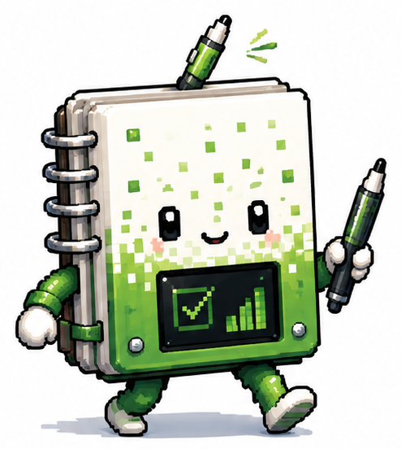
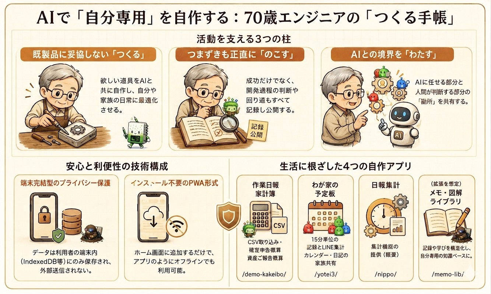

このサイトは、私が人生の中で困ったこと、考えたこと、そして作ったものを残していくための記録帳です。
多くの人には意味が分からないかもしれません。
それでも、どこかの誰かが「少し分かる」と感じてくれたら嬉しく思います。
どのアプリも、ブラウザで開くだけで使える「PWA」です。アプリを開いてホーム画面に追加すれば、ふつうのアプリのように起動できます。入力したデータはすべて手元の端末の中だけに保存され、サーバーには送られません。

70歳になりました。
出発点は、父が営む鉄工所でした。新幹線の架線金物をつくる工場でしたが、国鉄の経営難で整備新幹線の建設が凍結され、受注が途絶えて倒産。残ったのは、私が工場の生産管理と原価計算のために独学していたパソコンの知識だけでした。
その経験を頼りに、30歳でシステム開発を個人として始め、5年後に法人化。製造業向けの生産管理・原価管理システムを手がけてきました。一貫して大事にしてきたのは、「モノづくりの発想で、現場の手間を極限まで減らす」こと。
65歳で会長に退き、セミリタイヤして自分の時間ができたいま、出会ったのがAIです。大きな成功を狙うつもりはありません。誰か一人の役に立てば、それで価値がある。作って終わりにせず、何を考え、どこでつまずき、どんなスキルが効いたのか——過程ごと正直に書き残していきます。
既製品で妥協しない。必要な機能だけを、自分の使い方に合わせて。
うまくいった点も、回り道も。再現できる粒度で書き残す。
AIに任せる部分、人が決める部分。その線引きを共有する。
この歩みを、短い動画にもまとめました。